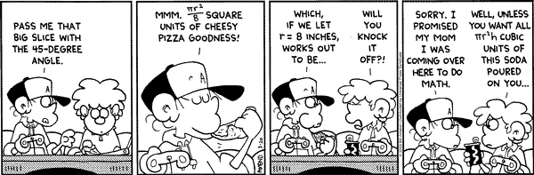
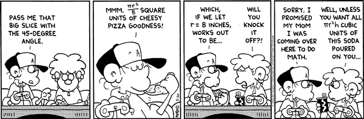

|
Computational Discrete Geometry Spring 2007 |
 |
|
Computational Discrete Geometry Spring 2007 |
 |
| Lecture: | Thu 4:00-6:45, TH 211 |
| Prerequisites: | Linear Algebra, Discrete Mathematics (or equivalent), basic programming skills, or consent of the instructors |
| Instructors: | Dr. Rahul Singh | Dr. Matthias Beck | ||||||||
| Office: | Thornton Hall 969 | Thornton Hall 933 | ||||||||
| Office hours: | F 12:00-2:30 | & by appointment |
|
& by appointment | ||||||
| Phone: | +1 415 338 2307 | +1 415 405 3473 | ||||||||
| Email: |
|
|
The main themes of computational discrete geometry are graphics, image processing, computer vision, pattern analysis, and geometric algorithms. These topics form a vital research area at the intersection of Computer Science and Mathematics. This graduate course will give students a broad and holistic background in computational discrete geometry encompassing basic background and algorithms, complexity issues, basic tools of computational geometry, and applications in various areas in computer science, computational mathematics, and beyond. The students in the course will actively pursue basic research and give part of the lectures on the more applied topics.
Course Objectives
Summary of Syllabus
The course's structure has three parts: classic classroom lectures by the instructors, student lectures, and presentations of final projects. The instructors' lectures will cover all basic notions and theoretical background. Each student will lecture on a more specialized topic, based on sections of the text book and research papers. The final projects will involve, for example, an actual implementation of an algorithm discussed in class. Both students' lectures and final projects are supposed to be concentrated around the applications of computational discrete geometry.
Each student lecture should cover the material of at least one section of the text book; the students covering different sections of a given chapter should communicate with each other. Each chapter that is covered by student lectures should be featured in at least three student lectures. The student lectures topics will be assigned on a first-come-first-serve basis; please let us know which section you would like to cover only if you know at least two of your classmates who want to cover different sections in the same chapter. Each student presentation (about one hour) should include a detailed handout to be distributed in class.
The final projects are supposed to be group projects with two students in each group; individual projects are ok. Each project team will give three presentations, one in the beginning of the semester (outlining the project), one mid-semester (progress), and one at the end of the semester (results). Each group will write a report on their project. The report should indicate which member of the group contributed what to the project, so that the group projects will be individually graded.
Grading system
| 50% | Student presentation |
| 44% | Group project |
| 6% | In-class Q&A |
Some more general fine print:
SFSU academic calender
CR/NCR grading
Incomplete grades
Late and retroactive withdrawals
Students with disabilities
Religious holidays
This syllabus is subject to change. All assignments, as well as other announcements on tests, policies, etc., are given in class. If you miss a class, it is your responsibility to find out what's going on. We will try to keep this course web page as updated as possible, however, the most recent information will always be given in class. Always ask lots of questions in class; our course is interactive. You are always encouraged to see us in our offices.

"Science is what we understand well enough to explain to a computer, Art is all the rest."
Donald E. Knuth (foreword to A=B by Petkovsek, Wilf and Zeilberger)